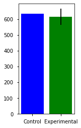
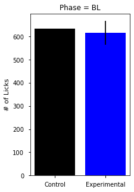
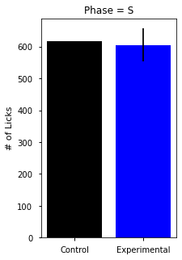
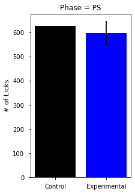
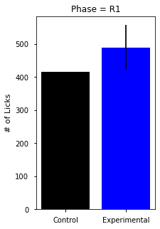
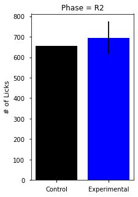
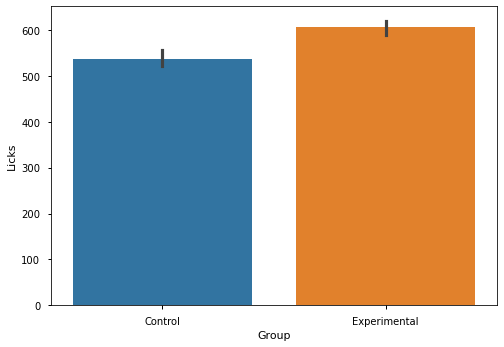

Sect 15-16: Hypothesis Testing with Neuro Data#
ANOVA & AB Testing
07/01/20
online-ds-pt-041320
Learning Objectives#
Discuss A/B Testing/Experimental Design using my neuroscience research data.
Discuss the multiple comparison problem.
Discuss ANOVA
NOTES#
This notebook is intended to walk through preparing my binge drinking data for Hypothesis Testing
Specifically, in this notebook I will attempt to use the most appropriate stat tests, which are not taught in the Learn curriculum
Repeated Measures ANOVA in Python
Two way RM ANOVA
REFERENCES#
Hypothesis Testing Workflow:
Two-Way and RM ANOVA Resources
One-way RM ANOVA (other packages): https://www.marsja.se/repeated-measures-anova-using-python/
Two-Way: https://marsja.se/two-way-anova-repeated-measures-using-python/
HYPOTHESIS TESTING STEPS#
Separate data in group vars.
Visualize data and calculate group n (size)
Select the appropriate test based on type of comparison being made, the number of groups, the type of data.
For t-tests: test for the assumptions of normality and homogeneity of variance.
Check if sample sizes allow us to ignore assumptions, and if not:
Test Assumption Normality
Test for Homogeneity of Variance
Choose appropriate test based upon the above
Perform chosen statistical test, calculate effect size, and any post-hoc tests.
To perform post-hoc pairwise comparison testing
Effect size calculation
Cohen’s d
Statistical Tests Summary Table#
Parametric tests (means) |
Function |
Nonparametric tests (medians) |
Function |
|---|---|---|---|
1-sample t test |
|
1-sample Wilcoxon |
|
2-sample t test |
|
Mann-Whitney U test |
|
One-Way ANOVA |
|
Kruskal-Wallis |
|
| Factorial DOE with one factor and one blocking variable |Friedman test |
Real-World Science / Experimental Design#
The Role of Stress Neurons in the Amygdala in Addiction/Binge Drinking#
The Opponent-Process Theory of Addiction#

We will be talking through some of the experiments from my Postdoctoral research on the roll of stress neurons in the escalation of binge drinking.
James’ Neuroscience Research Poster: Society for Neuroscience 2016

Hypothesis#
Based on prior evidence in the field, stress neurons in the amygdala are believed to be responsible for the negative emotions that promote binge consumption to relieve negative symptoms
\( H_1\): Increasing the activity of stress neurons (CRF neurons) in the amygdala will increase the amount of alcohol consumed by binge-drinking mice.
\(H_0\): Stimulation of CRF neurons has no effect on the amount of alcohol consumed.

Experimental Design#


Hypothesis Testing: Mouse Data#
Hypothesis#
Question: does stimulation of CRF Neurons in the central amygdala increase alcohol consumption?
Metric:
Groups:
\(H_1\):
\(H_0\):
\(\alpha\)=0.05
Step 1: which type of test?#
What type of data?
Numerical (# of licks)
How many groups?
Control vs Experimental
Training Phases (BL,S,PS,R)
Let’s First Try to Treat this as 2-sample T-Tests (one for each phase)#
# !pip install -U fsds
# from fsds.imports import *
import matplotlib.pyplot as plt
import seaborn as sns
import pandas as pd
import numpy as np
plt.style.use('seaborn-notebook')
pd.set_option('display.max_columns',0)
pd.set_option('display.precision',3)
Obtaining/Preprocessing Data#
import os
print(os.getcwd())
# os.listdir('../../datasets/')
/Users/jamesirving/Documents/GitHub/_COHORT_NOTES/022221FT/Online-DS-FT-022221-Cohort-Notes/Phase_2/topic_14_hypothesis_testing/instructor notebooks
df = pd.read_csv('../../../datasets/mouse_drinking_data_cleaned.csv',#"../../datasets/mouse_drinking_data_cleaned.csv")#,
index_col=0)
df.drop('Sex',inplace=True,axis=1)
df
| Group | BL1 | BL2 | BL3 | BL4 | S1 | S2 | S3 | S4 | PS1 | PS2 | PS3 | PS4 | R1_1 | R1_2 | R1_3 | R1_4 | R2_1 | R2_2 | R2_3 | R2_4 | |
|---|---|---|---|---|---|---|---|---|---|---|---|---|---|---|---|---|---|---|---|---|---|
| Mouse_ID | |||||||||||||||||||||
| 1 | Control | 665 | 863 | 631 | 629 | 583 | 801 | 723 | 707 | 732 | 680 | 684 | 485 | 65 | 301 | 351 | 441 | 675 | 554 | 541 | 545 |
| 2 | Control | 859 | 849 | 685 | 731 | 854 | 1103 | 645 | 633 | 733 | 662 | 605 | 623 | 128 | 268 | 462 | 569 | 988 | 728 | 933 | 564 |
| 3 | Control | 589 | 507 | 635 | 902 | 699 | 743 | 761 | 949 | 872 | 952 | 828 | 806 | 129 | 311 | 669 | 666 | 516 | 579 | 913 | 736 |
| 4 | Control | 939 | 909 | 850 | 756 | 807 | 617 | 526 | 736 | 743 | 625 | 690 | 759 | 281 | 357 | 386 | 585 | 565 | 550 | 806 | 732 |
| 5 | Experimental | 710 | 505 | 494 | 596 | 620 | 589 | 676 | 537 | 779 | 537 | 581 | 515 | 477 | 659 | 737 | 606 | 713 | 682 | 709 | 759 |
| 6 | Experimental | 564 | 808 | 589 | 596 | 591 | 580 | 419 | 463 | 707 | 625 | 547 | 595 | 532 | 951 | 901 | 851 | 807 | 858 | 802 | 803 |
| 7 | Experimental | 722 | 732 | 783 | 946 | 882 | 723 | 764 | 892 | 621 | 764 | 720 | 478 | 297 | 558 | 803 | 694 | 855 | 797 | 938 | 878 |
| 8 | Experimental | 497 | 649 | 586 | 506 | 546 | 493 | 456 | 601 | 437 | 462 | 704 | 498 | 10 | 44 | 86 | 284 | 212 | 133 | 141 | 274 |
| 9 | Experimental | 741 | 668 | 778 | 638 | 759 | 791 | 568 | 664 | 390 | 346 | 773 | 682 | 3 | 212 | 417 | 443 | 486 | 444 | 533 | 578 |
| 10 | Experimental | 953 | 988 | 579 | 706 | 1106 | 812 | 902 | 835 | 829 | 801 | 1011 | 919 | 274 | 559 | 840 | 890 | 724 | 793 | 559 | 700 |
| 11 | Experimental | 753 | 613 | 573 | 642 | 820 | 752 | 759 | 564 | 635 | 641 | 706 | 763 | 287 | 526 | 841 | 838 | 691 | 657 | 680 | 781 |
| 12 | Control | 494 | 602 | 570 | 530 | 570 | 396 | 403 | 380 | 362 | 467 | 491 | 557 | 98 | 262 | 344 | 388 | 435 | 551 | 552 | 537 |
| 13 | Control | 587 | 630 | 564 | 627 | 572 | 419 | 369 | 416 | 403 | 552 | 575 | 589 | 172 | 298 | 422 | 596 | 447 | 589 | 463 | 364 |
| 14 | Control | 917 | 680 | 737 | 596 | 699 | 484 | 452 | 438 | 547 | 729 | 830 | 411 | 71 | 386 | 581 | 832 | 586 | 610 | 634 | 716 |
| 15 | Control | 440 | 767 | 642 | 623 | 532 | 663 | 601 | 553 | 315 | 434 | 543 | 619 | 115 | 101 | 356 | 457 | 412 | 582 | 549 | 696 |
| 16 | Experimental | 715 | 469 | 392 | 333 | 492 | 594 | 695 | 568 | 916 | 675 | 669 | 895 | 98 | 558 | 977 | 956 | 974 | 1049 | 1366 | 942 |
| 17 | Experimental | 184 | 250 | 373 | 457 | 505 | 475 | 519 | 578 | 542 | 477 | 601 | 390 | 131 | 656 | 845 | 699 | 494 | 920 | 431 | 521 |
| 18 | Experimental | 934 | 1237 | 354 | 705 | 646 | 619 | 885 | 626 | 496 | 954 | 718 | 821 | 170 | 909 | 1049 | 994 | 675 | 803 | 866 | 880 |
| 19 | Experimental | 578 | 548 | 556 | 479 | 533 | 721 | 651 | 546 | 537 | 564 | 519 | 446 | 601 | 565 | 450 | 684 | 1675 | 976 | 1249 | 1047 |
| 20 | Experimental | 400 | 193 | 188 | 350 | 232 | 34 | 65 | 158 | 89 | 175 | 186 | 319 | 14 | 60 | 118 | 149 | 133 | 270 | 472 | 293 |
| 21 | Experimental | 448 | 221 | 505 | 459 | 483 | 491 | 394 | 673 | 593 | 444 | 430 | 630 | 176 | 611 | 680 | 552 | 652 | 879 | 990 | 900 |
| 22 | Control | 270 | 132 | 250 | 192 | 364 | 229 | 219 | 329 | 120 | 147 | 186 | 337 | 8 | 70 | 18 | 175 | 232 | 238 | 209 | 200 |
Laying Out Our Approach#
Make a dict/lists of the column names that should be averaged together (
col_dict)Make a new df of means using
col_dictMake a grp dict using
df_means.groupby('Group').groups
Visualize the two populations
Prepare for hypothesis tests
Either use
grpsdict to reference the correct columsn to pass into tests
## Loop through the differnet phases of the experiment
phases = ['BL','S','PS','R1','R2']
## save corresponding column names as values
col_dict = {}
for phase in phases:
col_dict[phase] = [col for col in df.columns if col.startswith(phase) ]
col_dict
{'BL': ['BL1', 'BL2', 'BL3', 'BL4'],
'S': ['S1', 'S2', 'S3', 'S4'],
'PS': ['PS1', 'PS2', 'PS3', 'PS4'],
'R1': ['R1_1', 'R1_2', 'R1_3', 'R1_4'],
'R2': ['R2_1', 'R2_2', 'R2_3', 'R2_4']}
## Get then opposite of col_dict
phase_dict = {}
for phase,colnames in col_dict.items():
for col in colnames:
phase_dict[col] = phase
phase_dict
{'BL1': 'BL',
'BL2': 'BL',
'BL3': 'BL',
'BL4': 'BL',
'S1': 'S',
'S2': 'S',
'S3': 'S',
'S4': 'S',
'PS1': 'PS',
'PS2': 'PS',
'PS3': 'PS',
'PS4': 'PS',
'R1_1': 'R1',
'R1_2': 'R1',
'R1_3': 'R1',
'R1_4': 'R1',
'R2_1': 'R2',
'R2_2': 'R2',
'R2_3': 'R2',
'R2_4': 'R2'}
Calculating individual mouse means by phase#
cols = col_dict['BL']
df[cols].mean(axis=1)
Mouse_ID
1 697.00
2 781.00
3 658.25
4 863.50
5 576.25
6 639.25
7 795.75
8 559.50
9 706.25
10 806.50
11 645.25
12 549.00
13 602.00
14 732.50
15 618.00
16 477.25
17 316.00
18 807.50
19 540.25
20 282.75
21 408.25
22 211.00
dtype: float64
df_means = df.reset_index()[['Mouse_ID','Group']].copy()
df_means
| Mouse_ID | Group | |
|---|---|---|
| 0 | 1 | Control |
| 1 | 2 | Control |
| 2 | 3 | Control |
| 3 | 4 | Control |
| 4 | 5 | Experimental |
| 5 | 6 | Experimental |
| 6 | 7 | Experimental |
| 7 | 8 | Experimental |
| 8 | 9 | Experimental |
| 9 | 10 | Experimental |
| 10 | 11 | Experimental |
| 11 | 12 | Control |
| 12 | 13 | Control |
| 13 | 14 | Control |
| 14 | 15 | Control |
| 15 | 16 | Experimental |
| 16 | 17 | Experimental |
| 17 | 18 | Experimental |
| 18 | 19 | Experimental |
| 19 | 20 | Experimental |
| 20 | 21 | Experimental |
| 21 | 22 | Control |
## Calculated the means by phase
df_means = df.reset_index(drop=False)[['Mouse_ID','Group']].copy()
for phase, cols in col_dict.items():
df_means[phase] = df[cols].mean(axis=1)
df_means
| Mouse_ID | Group | BL | S | PS | R1 | R2 | |
|---|---|---|---|---|---|---|---|
| 0 | 1 | Control | NaN | NaN | NaN | NaN | NaN |
| 1 | 2 | Control | 697.00 | 703.50 | 645.25 | 289.50 | 578.75 |
| 2 | 3 | Control | 781.00 | 808.75 | 655.75 | 356.75 | 803.25 |
| 3 | 4 | Control | 658.25 | 788.00 | 864.50 | 443.75 | 686.00 |
| 4 | 5 | Experimental | 863.50 | 671.50 | 704.25 | 402.25 | 663.25 |
| 5 | 6 | Experimental | 576.25 | 605.50 | 603.00 | 619.75 | 715.75 |
| 6 | 7 | Experimental | 639.25 | 513.25 | 618.50 | 808.75 | 817.50 |
| 7 | 8 | Experimental | 795.75 | 815.25 | 645.75 | 588.00 | 867.00 |
| 8 | 9 | Experimental | 559.50 | 524.00 | 525.25 | 106.00 | 190.00 |
| 9 | 10 | Experimental | 706.25 | 695.50 | 547.75 | 268.75 | 510.25 |
| 10 | 11 | Experimental | 806.50 | 913.75 | 890.00 | 640.75 | 694.00 |
| 11 | 12 | Control | 645.25 | 723.75 | 686.25 | 623.00 | 702.25 |
| 12 | 13 | Control | 549.00 | 437.25 | 469.25 | 273.00 | 518.75 |
| 13 | 14 | Control | 602.00 | 444.00 | 529.75 | 372.00 | 465.75 |
| 14 | 15 | Control | 732.50 | 518.25 | 629.25 | 467.50 | 636.50 |
| 15 | 16 | Experimental | 618.00 | 587.25 | 477.75 | 257.25 | 559.75 |
| 16 | 17 | Experimental | 477.25 | 587.25 | 788.75 | 647.25 | 1082.75 |
| 17 | 18 | Experimental | 316.00 | 519.25 | 502.50 | 582.75 | 591.50 |
| 18 | 19 | Experimental | 807.50 | 694.00 | 747.25 | 780.50 | 806.00 |
| 19 | 20 | Experimental | 540.25 | 612.75 | 516.50 | 575.00 | 1236.75 |
| 20 | 21 | Experimental | 282.75 | 122.25 | 192.25 | 85.25 | 292.00 |
| 21 | 22 | Control | 408.25 | 510.25 | 524.25 | 504.75 | 855.25 |
df
| Group | BL1 | BL2 | BL3 | BL4 | S1 | S2 | S3 | S4 | PS1 | PS2 | PS3 | PS4 | R1_1 | R1_2 | R1_3 | R1_4 | R2_1 | R2_2 | R2_3 | R2_4 | |
|---|---|---|---|---|---|---|---|---|---|---|---|---|---|---|---|---|---|---|---|---|---|
| Mouse_ID | |||||||||||||||||||||
| 1 | Control | 665 | 863 | 631 | 629 | 583 | 801 | 723 | 707 | 732 | 680 | 684 | 485 | 65 | 301 | 351 | 441 | 675 | 554 | 541 | 545 |
| 2 | Control | 859 | 849 | 685 | 731 | 854 | 1103 | 645 | 633 | 733 | 662 | 605 | 623 | 128 | 268 | 462 | 569 | 988 | 728 | 933 | 564 |
| 3 | Control | 589 | 507 | 635 | 902 | 699 | 743 | 761 | 949 | 872 | 952 | 828 | 806 | 129 | 311 | 669 | 666 | 516 | 579 | 913 | 736 |
| 4 | Control | 939 | 909 | 850 | 756 | 807 | 617 | 526 | 736 | 743 | 625 | 690 | 759 | 281 | 357 | 386 | 585 | 565 | 550 | 806 | 732 |
| 5 | Experimental | 710 | 505 | 494 | 596 | 620 | 589 | 676 | 537 | 779 | 537 | 581 | 515 | 477 | 659 | 737 | 606 | 713 | 682 | 709 | 759 |
| 6 | Experimental | 564 | 808 | 589 | 596 | 591 | 580 | 419 | 463 | 707 | 625 | 547 | 595 | 532 | 951 | 901 | 851 | 807 | 858 | 802 | 803 |
| 7 | Experimental | 722 | 732 | 783 | 946 | 882 | 723 | 764 | 892 | 621 | 764 | 720 | 478 | 297 | 558 | 803 | 694 | 855 | 797 | 938 | 878 |
| 8 | Experimental | 497 | 649 | 586 | 506 | 546 | 493 | 456 | 601 | 437 | 462 | 704 | 498 | 10 | 44 | 86 | 284 | 212 | 133 | 141 | 274 |
| 9 | Experimental | 741 | 668 | 778 | 638 | 759 | 791 | 568 | 664 | 390 | 346 | 773 | 682 | 3 | 212 | 417 | 443 | 486 | 444 | 533 | 578 |
| 10 | Experimental | 953 | 988 | 579 | 706 | 1106 | 812 | 902 | 835 | 829 | 801 | 1011 | 919 | 274 | 559 | 840 | 890 | 724 | 793 | 559 | 700 |
| 11 | Experimental | 753 | 613 | 573 | 642 | 820 | 752 | 759 | 564 | 635 | 641 | 706 | 763 | 287 | 526 | 841 | 838 | 691 | 657 | 680 | 781 |
| 12 | Control | 494 | 602 | 570 | 530 | 570 | 396 | 403 | 380 | 362 | 467 | 491 | 557 | 98 | 262 | 344 | 388 | 435 | 551 | 552 | 537 |
| 13 | Control | 587 | 630 | 564 | 627 | 572 | 419 | 369 | 416 | 403 | 552 | 575 | 589 | 172 | 298 | 422 | 596 | 447 | 589 | 463 | 364 |
| 14 | Control | 917 | 680 | 737 | 596 | 699 | 484 | 452 | 438 | 547 | 729 | 830 | 411 | 71 | 386 | 581 | 832 | 586 | 610 | 634 | 716 |
| 15 | Control | 440 | 767 | 642 | 623 | 532 | 663 | 601 | 553 | 315 | 434 | 543 | 619 | 115 | 101 | 356 | 457 | 412 | 582 | 549 | 696 |
| 16 | Experimental | 715 | 469 | 392 | 333 | 492 | 594 | 695 | 568 | 916 | 675 | 669 | 895 | 98 | 558 | 977 | 956 | 974 | 1049 | 1366 | 942 |
| 17 | Experimental | 184 | 250 | 373 | 457 | 505 | 475 | 519 | 578 | 542 | 477 | 601 | 390 | 131 | 656 | 845 | 699 | 494 | 920 | 431 | 521 |
| 18 | Experimental | 934 | 1237 | 354 | 705 | 646 | 619 | 885 | 626 | 496 | 954 | 718 | 821 | 170 | 909 | 1049 | 994 | 675 | 803 | 866 | 880 |
| 19 | Experimental | 578 | 548 | 556 | 479 | 533 | 721 | 651 | 546 | 537 | 564 | 519 | 446 | 601 | 565 | 450 | 684 | 1675 | 976 | 1249 | 1047 |
| 20 | Experimental | 400 | 193 | 188 | 350 | 232 | 34 | 65 | 158 | 89 | 175 | 186 | 319 | 14 | 60 | 118 | 149 | 133 | 270 | 472 | 293 |
| 21 | Experimental | 448 | 221 | 505 | 459 | 483 | 491 | 394 | 673 | 593 | 444 | 430 | 630 | 176 | 611 | 680 | 552 | 652 | 879 | 990 | 900 |
| 22 | Control | 270 | 132 | 250 | 192 | 364 | 229 | 219 | 329 | 120 | 147 | 186 | 337 | 8 | 70 | 18 | 175 | 232 | 238 | 209 | 200 |
Getting Group Data For EDA & Testing#
## Get grps
data = {}
## Two different ways of using groupby
grps = df_means.groupby('Group').groups
## For each group
for grp in grps:
## Save the group df as grp name
data[grp] = df_means.groupby('Group').get_group(grp)
# Display data
display(data[grp].head().style.set_caption(grp))
| Mouse_ID | Group | BL | S | PS | R1 | R2 | |
|---|---|---|---|---|---|---|---|
| 0 | 1 | Control | nan | nan | nan | nan | nan |
| 1 | 2 | Control | 697.000 | 703.500 | 645.250 | 289.500 | 578.750 |
| 2 | 3 | Control | 781.000 | 808.750 | 655.750 | 356.750 | 803.250 |
| 3 | 4 | Control | 658.250 | 788.000 | 864.500 | 443.750 | 686.000 |
| 11 | 12 | Control | 645.250 | 723.750 | 686.250 | 623.000 | 702.250 |
| Mouse_ID | Group | BL | S | PS | R1 | R2 | |
|---|---|---|---|---|---|---|---|
| 4 | 5 | Experimental | 863.500 | 671.500 | 704.250 | 402.250 | 663.250 |
| 5 | 6 | Experimental | 576.250 | 605.500 | 603.000 | 619.750 | 715.750 |
| 6 | 7 | Experimental | 639.250 | 513.250 | 618.500 | 808.750 | 817.500 |
| 7 | 8 | Experimental | 795.750 | 815.250 | 645.750 | 588.000 | 867.000 |
| 8 | 9 | Experimental | 559.500 | 524.000 | 525.250 | 106.000 | 190.000 |
data.keys()
dict_keys(['Control', 'Experimental'])
data['Control']
| Mouse_ID | Group | BL | S | PS | R1 | R2 | |
|---|---|---|---|---|---|---|---|
| 0 | 1 | Control | NaN | NaN | NaN | NaN | NaN |
| 1 | 2 | Control | 697.00 | 703.50 | 645.25 | 289.50 | 578.75 |
| 2 | 3 | Control | 781.00 | 808.75 | 655.75 | 356.75 | 803.25 |
| 3 | 4 | Control | 658.25 | 788.00 | 864.50 | 443.75 | 686.00 |
| 11 | 12 | Control | 645.25 | 723.75 | 686.25 | 623.00 | 702.25 |
| 12 | 13 | Control | 549.00 | 437.25 | 469.25 | 273.00 | 518.75 |
| 13 | 14 | Control | 602.00 | 444.00 | 529.75 | 372.00 | 465.75 |
| 14 | 15 | Control | 732.50 | 518.25 | 629.25 | 467.50 | 636.50 |
| 21 | 22 | Control | 408.25 | 510.25 | 524.25 | 504.75 | 855.25 |
Plotting Group Means + Standard Error of the Mean#
from scipy.stats import sem
## Create lists for saving x,y, and yerr
x = []
y = []
y_err = []
## Select a phase to visualize
phase = "BL"
# For each group
for group in data:
## grab the correct phasen col from group data
grp_data = data[group][phase]
## Save x,y
x.append(group)
y.append(grp_data.mean())
## Calc and save error
y_err.append(sem(grp_data))
y_err
[nan, 51.01579900410866]
fig,ax = plt.subplots(figsize=(2,4))
plt.bar(x,y,yerr=y_err,color=['b','g'])
<BarContainer object of 2 artists>

def plot_bars_yerr(data,phase = "BL"):
"""Plots the group means +/- standard error of the mean."""
from scipy.stats import sem
## Save x,y, and yerr
x = []
y = []
y_err = []
for group in data:
grp_data = data[group][phase]
x.append(f"{group}")
y.append(grp_data.mean())
y_err.append(sem(grp_data))
fig,ax = plt.subplots(figsize=(3,5))
ax.bar(x,y,yerr=y_err,color=['k','b'])
ax.set_title(f"Phase = {phase}")
ax.set(ylabel='# of Licks')
return fig,ax
Run 2-sample T-Test on Baseline Days#
f,a = plot_bars_yerr(data,phase = "BL")

test_phase = "BL"
f,a = plot_bars_yerr(data,phase)
for grp in data:
pass
for grp,grp_df in data.items():
print(grp)
# display(grp_df)
grp_df
Control
Experimental
| Mouse_ID | Group | BL | S | PS | R1 | R2 | |
|---|---|---|---|---|---|---|---|
| 4 | 5 | Experimental | 863.50 | 671.50 | 704.25 | 402.25 | 663.25 |
| 5 | 6 | Experimental | 576.25 | 605.50 | 603.00 | 619.75 | 715.75 |
| 6 | 7 | Experimental | 639.25 | 513.25 | 618.50 | 808.75 | 817.50 |
| 7 | 8 | Experimental | 795.75 | 815.25 | 645.75 | 588.00 | 867.00 |
| 8 | 9 | Experimental | 559.50 | 524.00 | 525.25 | 106.00 | 190.00 |
| 9 | 10 | Experimental | 706.25 | 695.50 | 547.75 | 268.75 | 510.25 |
| 10 | 11 | Experimental | 806.50 | 913.75 | 890.00 | 640.75 | 694.00 |
| 15 | 16 | Experimental | 618.00 | 587.25 | 477.75 | 257.25 | 559.75 |
| 16 | 17 | Experimental | 477.25 | 587.25 | 788.75 | 647.25 | 1082.75 |
| 17 | 18 | Experimental | 316.00 | 519.25 | 502.50 | 582.75 | 591.50 |
| 18 | 19 | Experimental | 807.50 | 694.00 | 747.25 | 780.50 | 806.00 |
| 19 | 20 | Experimental | 540.25 | 612.75 | 516.50 | 575.00 | 1236.75 |
| 20 | 21 | Experimental | 282.75 | 122.25 | 192.25 | 85.25 | 292.00 |
import scipy.stats as st
test_phase = 'BL'
## Make list of list of headers
results = [['Group','n','Normaltest Stat','p','sig?']]
## Make an empty list for our group data
test_equal_var = []
## Loop through the data dictionary
for grp,grp_df in data.items():
## Grab the correct phase column from the group df
grp_data = grp_df[test_phase].copy()
## Append group data to list of group data
test_equal_var.append(grp_data)
## Test for nomrality and save result
stat,p = st.normaltest(grp_data)
results.append([grp,len(grp_data),stat,p,p<.05])
results
/opt/anaconda3/envs/learn-env-new/lib/python3.8/site-packages/scipy/stats/stats.py:1603: UserWarning: kurtosistest only valid for n>=20 ... continuing anyway, n=9
warnings.warn("kurtosistest only valid for n>=20 ... continuing "
/opt/anaconda3/envs/learn-env-new/lib/python3.8/site-packages/scipy/stats/stats.py:1603: UserWarning: kurtosistest only valid for n>=20 ... continuing anyway, n=13
warnings.warn("kurtosistest only valid for n>=20 ... continuing "
[['Group', 'n', 'Normaltest Stat', 'p', 'sig?'],
['Control', 9, nan, nan, False],
['Experimental', 13, 0.7406609338476349, 0.6905061035007707, False]]
pd.DataFrame(results[1:],columns=results[0])
| Group | n | Normaltest Stat | p | sig? | |
|---|---|---|---|---|---|
| 0 | Control | 9 | NaN | NaN | False |
| 1 | Experimental | 13 | 0.741 | 0.691 | False |
Adding Levene’s Test#
import scipy.stats as st
## Make list of list of headers
results = [['Group','n','Normaltest Stat','p','sig?']]
## Make an empty list for our group data
test_equal_var = []
## Loop through the data dictionary
for grp,grp_df in data.items():
## Grab the correct phase column from the group df
grp_data = grp_df[test_phase].copy()
## Append group data to list of group data
test_equal_var.append(grp_data)
## Test for nomrality and save result
stat,p = st.normaltest(grp_data)
results.append([grp,len(grp_data),stat,p,p<.05])
## Test for equal variance
stat, p = st.levene(*test_equal_var)
results.append(['Equal Variance','all',stat,p,p<.05])
results_df = pd.DataFrame(results[1:],columns=results[0])
results_df
/opt/anaconda3/envs/learn-env-new/lib/python3.8/site-packages/scipy/stats/stats.py:1603: UserWarning: kurtosistest only valid for n>=20 ... continuing anyway, n=9
warnings.warn("kurtosistest only valid for n>=20 ... continuing "
/opt/anaconda3/envs/learn-env-new/lib/python3.8/site-packages/scipy/stats/stats.py:1603: UserWarning: kurtosistest only valid for n>=20 ... continuing anyway, n=13
warnings.warn("kurtosistest only valid for n>=20 ... continuing "
| Group | n | Normaltest Stat | p | sig? | |
|---|---|---|---|---|---|
| 0 | Control | 9 | NaN | NaN | False |
| 1 | Experimental | 13 | 0.741 | 0.691 | False |
| 2 | Equal Variance | all | NaN | NaN | False |
Run Correct Test#
st.mannwhitneyu(*test_equal_var)
MannwhitneyuResult(statistic=50.0, pvalue=0.29659312730085824)
## Functionize code for testing other phases
import scipy.stats as st
def test_assumptions(data,test_phase):#,plot=True):
## Make list of list of headers
results = [['Phase','Group','n','Normaltest Stat','p','sig?']]
## Make an empty list for our group data
test_equal_var = []
## Loop through the data dictionary
for grp,grp_df in data.items():
## Grab the correct phase column from the group df
grp_data = grp_df[test_phase].copy()
## Append group data to list of group data
test_equal_var.append(grp_data)
## Test for nomrality and save result
stat,p = st.normaltest(grp_data)
results.append([test_phase,grp,len(grp_data),stat,p,p<.05])
## Test for equal variance
stat, p = st.levene(*test_equal_var)
results.append([test_phase,'Equal Variance','all',stat,p,p<.05])
results_df = pd.DataFrame(results[1:],columns=results[0])
return results_df
res_df= test_assumptions(data,'S')
res_df
/opt/anaconda3/envs/learn-env-new/lib/python3.8/site-packages/scipy/stats/stats.py:1603: UserWarning: kurtosistest only valid for n>=20 ... continuing anyway, n=9
warnings.warn("kurtosistest only valid for n>=20 ... continuing "
/opt/anaconda3/envs/learn-env-new/lib/python3.8/site-packages/scipy/stats/stats.py:1603: UserWarning: kurtosistest only valid for n>=20 ... continuing anyway, n=13
warnings.warn("kurtosistest only valid for n>=20 ... continuing "
| Phase | Group | n | Normaltest Stat | p | sig? | |
|---|---|---|---|---|---|---|
| 0 | S | Control | 9 | NaN | NaN | False |
| 1 | S | Experimental | 13 | 8.111 | 0.017 | True |
| 2 | S | Equal Variance | all | NaN | NaN | False |
fig,ax = plot_bars_yerr(data,phase='S')

## Add Plotting to function
import scipy.stats as st
def test_assumptions(data,test_phase,plot=True):
if plot:
fig,ax = plot_bars_yerr(data,phase=test_phase)
## Make list of list of headers
results = [['Phase','Group','n','Normaltest Stat','p','sig?']]
## Make an empty list for our group data
test_equal_var = []
## Loop through the data dictionary
for grp,grp_df in data.items():
## Grab the correct phase column from the group df
grp_data = grp_df[test_phase].copy()
## Append group data to list of group data
test_equal_var.append(grp_data)
## Test for nomrality and save result
stat,p = st.normaltest(grp_data)
results.append([test_phase,grp,len(grp_data),stat,p,p<.05])
## Test for equal variance
stat, p = st.levene(*test_equal_var)
results.append([test_phase,'Equal Variance','all',stat,p,p<.05])
results_df = pd.DataFrame(results[1:],columns=results[0])
return results_df
RESULTS = {}
for phase in phases:
res_df = test_assumptions(data,phase)
display(res_df)
plt.show()
/opt/anaconda3/envs/learn-env-new/lib/python3.8/site-packages/scipy/stats/stats.py:1603: UserWarning: kurtosistest only valid for n>=20 ... continuing anyway, n=9
warnings.warn("kurtosistest only valid for n>=20 ... continuing "
/opt/anaconda3/envs/learn-env-new/lib/python3.8/site-packages/scipy/stats/stats.py:1603: UserWarning: kurtosistest only valid for n>=20 ... continuing anyway, n=13
warnings.warn("kurtosistest only valid for n>=20 ... continuing "
| Phase | Group | n | Normaltest Stat | p | sig? | |
|---|---|---|---|---|---|---|
| 0 | BL | Control | 9 | NaN | NaN | False |
| 1 | BL | Experimental | 13 | 0.741 | 0.691 | False |
| 2 | BL | Equal Variance | all | NaN | NaN | False |
/opt/anaconda3/envs/learn-env-new/lib/python3.8/site-packages/scipy/stats/stats.py:1603: UserWarning: kurtosistest only valid for n>=20 ... continuing anyway, n=9
warnings.warn("kurtosistest only valid for n>=20 ... continuing "
/opt/anaconda3/envs/learn-env-new/lib/python3.8/site-packages/scipy/stats/stats.py:1603: UserWarning: kurtosistest only valid for n>=20 ... continuing anyway, n=13
warnings.warn("kurtosistest only valid for n>=20 ... continuing "
| Phase | Group | n | Normaltest Stat | p | sig? | |
|---|---|---|---|---|---|---|
| 0 | S | Control | 9 | NaN | NaN | False |
| 1 | S | Experimental | 13 | 8.111 | 0.017 | True |
| 2 | S | Equal Variance | all | NaN | NaN | False |
/opt/anaconda3/envs/learn-env-new/lib/python3.8/site-packages/scipy/stats/stats.py:1603: UserWarning: kurtosistest only valid for n>=20 ... continuing anyway, n=9
warnings.warn("kurtosistest only valid for n>=20 ... continuing "
/opt/anaconda3/envs/learn-env-new/lib/python3.8/site-packages/scipy/stats/stats.py:1603: UserWarning: kurtosistest only valid for n>=20 ... continuing anyway, n=13
warnings.warn("kurtosistest only valid for n>=20 ... continuing "
| Phase | Group | n | Normaltest Stat | p | sig? | |
|---|---|---|---|---|---|---|
| 0 | PS | Control | 9 | NaN | NaN | False |
| 1 | PS | Experimental | 13 | 2.936 | 0.23 | False |
| 2 | PS | Equal Variance | all | NaN | NaN | False |

/opt/anaconda3/envs/learn-env-new/lib/python3.8/site-packages/scipy/stats/stats.py:1603: UserWarning: kurtosistest only valid for n>=20 ... continuing anyway, n=9
warnings.warn("kurtosistest only valid for n>=20 ... continuing "
/opt/anaconda3/envs/learn-env-new/lib/python3.8/site-packages/scipy/stats/stats.py:1603: UserWarning: kurtosistest only valid for n>=20 ... continuing anyway, n=13
warnings.warn("kurtosistest only valid for n>=20 ... continuing "
| Phase | Group | n | Normaltest Stat | p | sig? | |
|---|---|---|---|---|---|---|
| 0 | R1 | Control | 9 | NaN | NaN | False |
| 1 | R1 | Experimental | 13 | 1.559 | 0.459 | False |
| 2 | R1 | Equal Variance | all | NaN | NaN | False |

/opt/anaconda3/envs/learn-env-new/lib/python3.8/site-packages/scipy/stats/stats.py:1603: UserWarning: kurtosistest only valid for n>=20 ... continuing anyway, n=9
warnings.warn("kurtosistest only valid for n>=20 ... continuing "
/opt/anaconda3/envs/learn-env-new/lib/python3.8/site-packages/scipy/stats/stats.py:1603: UserWarning: kurtosistest only valid for n>=20 ... continuing anyway, n=13
warnings.warn("kurtosistest only valid for n>=20 ... continuing "
| Phase | Group | n | Normaltest Stat | p | sig? | |
|---|---|---|---|---|---|---|
| 0 | R2 | Control | 9 | NaN | NaN | False |
| 1 | R2 | Experimental | 13 | 0.216 | 0.898 | False |
| 2 | R2 | Equal Variance | all | NaN | NaN | False |

df_means
| Mouse_ID | Group | BL | S | PS | R1 | R2 | |
|---|---|---|---|---|---|---|---|
| 0 | 1 | Control | NaN | NaN | NaN | NaN | NaN |
| 1 | 2 | Control | 697.00 | 703.50 | 645.25 | 289.50 | 578.75 |
| 2 | 3 | Control | 781.00 | 808.75 | 655.75 | 356.75 | 803.25 |
| 3 | 4 | Control | 658.25 | 788.00 | 864.50 | 443.75 | 686.00 |
| 4 | 5 | Experimental | 863.50 | 671.50 | 704.25 | 402.25 | 663.25 |
| 5 | 6 | Experimental | 576.25 | 605.50 | 603.00 | 619.75 | 715.75 |
| 6 | 7 | Experimental | 639.25 | 513.25 | 618.50 | 808.75 | 817.50 |
| 7 | 8 | Experimental | 795.75 | 815.25 | 645.75 | 588.00 | 867.00 |
| 8 | 9 | Experimental | 559.50 | 524.00 | 525.25 | 106.00 | 190.00 |
| 9 | 10 | Experimental | 706.25 | 695.50 | 547.75 | 268.75 | 510.25 |
| 10 | 11 | Experimental | 806.50 | 913.75 | 890.00 | 640.75 | 694.00 |
| 11 | 12 | Control | 645.25 | 723.75 | 686.25 | 623.00 | 702.25 |
| 12 | 13 | Control | 549.00 | 437.25 | 469.25 | 273.00 | 518.75 |
| 13 | 14 | Control | 602.00 | 444.00 | 529.75 | 372.00 | 465.75 |
| 14 | 15 | Control | 732.50 | 518.25 | 629.25 | 467.50 | 636.50 |
| 15 | 16 | Experimental | 618.00 | 587.25 | 477.75 | 257.25 | 559.75 |
| 16 | 17 | Experimental | 477.25 | 587.25 | 788.75 | 647.25 | 1082.75 |
| 17 | 18 | Experimental | 316.00 | 519.25 | 502.50 | 582.75 | 591.50 |
| 18 | 19 | Experimental | 807.50 | 694.00 | 747.25 | 780.50 | 806.00 |
| 19 | 20 | Experimental | 540.25 | 612.75 | 516.50 | 575.00 | 1236.75 |
| 20 | 21 | Experimental | 282.75 | 122.25 | 192.25 | 85.25 | 292.00 |
| 21 | 22 | Control | 408.25 | 510.25 | 524.25 | 504.75 | 855.25 |
BOOKMARK - didn’t copy below here#
RM ANOVA Melting DF#
df
| Group | BL1 | BL2 | BL3 | BL4 | S1 | S2 | S3 | S4 | PS1 | PS2 | PS3 | PS4 | R1_1 | R1_2 | R1_3 | R1_4 | R2_1 | R2_2 | R2_3 | R2_4 | |
|---|---|---|---|---|---|---|---|---|---|---|---|---|---|---|---|---|---|---|---|---|---|
| Mouse_ID | |||||||||||||||||||||
| 1 | Control | 665 | 863 | 631 | 629 | 583 | 801 | 723 | 707 | 732 | 680 | 684 | 485 | 65 | 301 | 351 | 441 | 675 | 554 | 541 | 545 |
| 2 | Control | 859 | 849 | 685 | 731 | 854 | 1103 | 645 | 633 | 733 | 662 | 605 | 623 | 128 | 268 | 462 | 569 | 988 | 728 | 933 | 564 |
| 3 | Control | 589 | 507 | 635 | 902 | 699 | 743 | 761 | 949 | 872 | 952 | 828 | 806 | 129 | 311 | 669 | 666 | 516 | 579 | 913 | 736 |
| 4 | Control | 939 | 909 | 850 | 756 | 807 | 617 | 526 | 736 | 743 | 625 | 690 | 759 | 281 | 357 | 386 | 585 | 565 | 550 | 806 | 732 |
| 5 | Experimental | 710 | 505 | 494 | 596 | 620 | 589 | 676 | 537 | 779 | 537 | 581 | 515 | 477 | 659 | 737 | 606 | 713 | 682 | 709 | 759 |
| 6 | Experimental | 564 | 808 | 589 | 596 | 591 | 580 | 419 | 463 | 707 | 625 | 547 | 595 | 532 | 951 | 901 | 851 | 807 | 858 | 802 | 803 |
| 7 | Experimental | 722 | 732 | 783 | 946 | 882 | 723 | 764 | 892 | 621 | 764 | 720 | 478 | 297 | 558 | 803 | 694 | 855 | 797 | 938 | 878 |
| 8 | Experimental | 497 | 649 | 586 | 506 | 546 | 493 | 456 | 601 | 437 | 462 | 704 | 498 | 10 | 44 | 86 | 284 | 212 | 133 | 141 | 274 |
| 9 | Experimental | 741 | 668 | 778 | 638 | 759 | 791 | 568 | 664 | 390 | 346 | 773 | 682 | 3 | 212 | 417 | 443 | 486 | 444 | 533 | 578 |
| 10 | Experimental | 953 | 988 | 579 | 706 | 1106 | 812 | 902 | 835 | 829 | 801 | 1011 | 919 | 274 | 559 | 840 | 890 | 724 | 793 | 559 | 700 |
| 11 | Experimental | 753 | 613 | 573 | 642 | 820 | 752 | 759 | 564 | 635 | 641 | 706 | 763 | 287 | 526 | 841 | 838 | 691 | 657 | 680 | 781 |
| 12 | Control | 494 | 602 | 570 | 530 | 570 | 396 | 403 | 380 | 362 | 467 | 491 | 557 | 98 | 262 | 344 | 388 | 435 | 551 | 552 | 537 |
| 13 | Control | 587 | 630 | 564 | 627 | 572 | 419 | 369 | 416 | 403 | 552 | 575 | 589 | 172 | 298 | 422 | 596 | 447 | 589 | 463 | 364 |
| 14 | Control | 917 | 680 | 737 | 596 | 699 | 484 | 452 | 438 | 547 | 729 | 830 | 411 | 71 | 386 | 581 | 832 | 586 | 610 | 634 | 716 |
| 15 | Control | 440 | 767 | 642 | 623 | 532 | 663 | 601 | 553 | 315 | 434 | 543 | 619 | 115 | 101 | 356 | 457 | 412 | 582 | 549 | 696 |
| 16 | Experimental | 715 | 469 | 392 | 333 | 492 | 594 | 695 | 568 | 916 | 675 | 669 | 895 | 98 | 558 | 977 | 956 | 974 | 1049 | 1366 | 942 |
| 17 | Experimental | 184 | 250 | 373 | 457 | 505 | 475 | 519 | 578 | 542 | 477 | 601 | 390 | 131 | 656 | 845 | 699 | 494 | 920 | 431 | 521 |
| 18 | Experimental | 934 | 1237 | 354 | 705 | 646 | 619 | 885 | 626 | 496 | 954 | 718 | 821 | 170 | 909 | 1049 | 994 | 675 | 803 | 866 | 880 |
| 19 | Experimental | 578 | 548 | 556 | 479 | 533 | 721 | 651 | 546 | 537 | 564 | 519 | 446 | 601 | 565 | 450 | 684 | 1675 | 976 | 1249 | 1047 |
| 20 | Experimental | 400 | 193 | 188 | 350 | 232 | 34 | 65 | 158 | 89 | 175 | 186 | 319 | 14 | 60 | 118 | 149 | 133 | 270 | 472 | 293 |
| 21 | Experimental | 448 | 221 | 505 | 459 | 483 | 491 | 394 | 673 | 593 | 444 | 430 | 630 | 176 | 611 | 680 | 552 | 652 | 879 | 990 | 900 |
| 22 | Control | 270 | 132 | 250 | 192 | 364 | 229 | 219 | 329 | 120 | 147 | 186 | 337 | 8 | 70 | 18 | 175 | 232 | 238 | 209 | 200 |
## MELTING THE DATA INTO FORM WORKABLE FOR PLOTS/ANALYSIS
df2= pd.melt(df.reset_index(drop=False),id_vars=['Mouse_ID','Group'],
value_name='Licks',var_name='Day')
df2
| Mouse_ID | Group | Day | Licks | |
|---|---|---|---|---|
| 0 | 1 | Control | BL1 | 665 |
| 1 | 2 | Control | BL1 | 859 |
| 2 | 3 | Control | BL1 | 589 |
| 3 | 4 | Control | BL1 | 939 |
| 4 | 5 | Experimental | BL1 | 710 |
| ... | ... | ... | ... | ... |
| 435 | 18 | Experimental | R2_4 | 880 |
| 436 | 19 | Experimental | R2_4 | 1047 |
| 437 | 20 | Experimental | R2_4 | 293 |
| 438 | 21 | Experimental | R2_4 | 900 |
| 439 | 22 | Control | R2_4 | 200 |
440 rows × 4 columns
# phase_dict
## Mapping Phase from Phase Dict
df2['Phase'] = df2['Day'].map(phase_dict)
## Getting Day of Phase
df2['Day_of_Phase'] = df2['Day'].apply(lambda x: x[-1])
# df2 = df2.dropna(subset=['Phase'])
df2
| Mouse_ID | Group | Day | Licks | Phase | Day_of_Phase | |
|---|---|---|---|---|---|---|
| 0 | 1 | Control | BL1 | 665 | BL | 1 |
| 1 | 2 | Control | BL1 | 859 | BL | 1 |
| 2 | 3 | Control | BL1 | 589 | BL | 1 |
| 3 | 4 | Control | BL1 | 939 | BL | 1 |
| 4 | 5 | Experimental | BL1 | 710 | BL | 1 |
| ... | ... | ... | ... | ... | ... | ... |
| 435 | 18 | Experimental | R2_4 | 880 | R2 | 4 |
| 436 | 19 | Experimental | R2_4 | 1047 | R2 | 4 |
| 437 | 20 | Experimental | R2_4 | 293 | R2 | 4 |
| 438 | 21 | Experimental | R2_4 | 900 | R2 | 4 |
| 439 | 22 | Control | R2_4 | 200 | R2 | 4 |
440 rows × 6 columns
# df2.to_csv('mouse_drinking_data_melted_with_phases.csv')
sns.barplot('Group','Licks',data=df2,ci=68)
/opt/anaconda3/envs/learn-env-new/lib/python3.8/site-packages/seaborn/_decorators.py:36: FutureWarning: Pass the following variables as keyword args: x, y. From version 0.12, the only valid positional argument will be `data`, and passing other arguments without an explicit keyword will result in an error or misinterpretation.
warnings.warn(
<AxesSubplot:xlabel='Group', ylabel='Licks'>

import statsmodels.api as sm
from statsmodels.formula.api import ols
df2.columns
Index(['Mouse_ID', 'Group', 'Day', 'Licks', 'Phase', 'Day_of_Phase'], dtype='object')
formula = "Licks~C(Group)*C(Phase)"#'S ~ C(E) + C(M) + X'
lm = ols(formula, df2).fit()
table = sm.stats.anova_lm(lm, typ=2)
display(table)
| sum_sq | df | F | PR(>F) | |
|---|---|---|---|---|
| C(Group) | 4.951e+05 | 1.0 | 9.240 | 2.512e-03 |
| C(Phase) | 2.254e+06 | 4.0 | 10.516 | 3.892e-08 |
| C(Group):C(Phase) | 9.140e+05 | 4.0 | 4.264 | 2.147e-03 |
| Residual | 2.304e+07 | 430.0 | NaN | NaN |
from statsmodels.stats.multicomp import pairwise_tukeyhsd
pairwise_tukeyhsd
<function statsmodels.stats.multicomp.pairwise_tukeyhsd(endog, groups, alpha=0.05)>
res = pairwise_tukeyhsd(df2['Licks'],df2['Phase'])
res.summary()
| group1 | group2 | meandiff | p-adj | lower | upper | reject |
|---|---|---|---|---|---|---|
| BL | PS | -14.1705 | 0.9 | -112.0762 | 83.7353 | False |
| BL | R1 | -159.6705 | 0.001 | -257.5762 | -61.7647 | True |
| BL | R2 | 55.4432 | 0.5256 | -42.4626 | 153.3489 | False |
| BL | S | -8.75 | 0.9 | -106.6557 | 89.1557 | False |
| PS | R1 | -145.5 | 0.001 | -243.4057 | -47.5943 | True |
| PS | R2 | 69.6136 | 0.2939 | -28.2921 | 167.5194 | False |
| PS | S | 5.4205 | 0.9 | -92.4853 | 103.3262 | False |
| R1 | R2 | 215.1136 | 0.001 | 117.2079 | 313.0194 | True |
| R1 | S | 150.9205 | 0.001 | 53.0147 | 248.8262 | True |
| R2 | S | -64.1932 | 0.3782 | -162.0989 | 33.7126 | False |
control_df =df2.groupby('Group').get_group('Control')
exp_df = df2.groupby('Group').get_group('Experimental')
res = pairwise_tukeyhsd(control_df['Licks'],control_df['Phase'])
res.summary()
| group1 | group2 | meandiff | p-adj | lower | upper | reject |
|---|---|---|---|---|---|---|
| BL | PS | -59.8889 | 0.6804 | -189.021 | 69.2433 | False |
| BL | R1 | -309.1667 | 0.001 | -438.2988 | -180.0345 | True |
| BL | R2 | -64.5 | 0.6249 | -193.6322 | 64.6322 | False |
| BL | S | -52.0556 | 0.7748 | -181.1877 | 77.0766 | False |
| PS | R1 | -249.2778 | 0.001 | -378.4099 | -120.1456 | True |
| PS | R2 | -4.6111 | 0.9 | -133.7433 | 124.521 | False |
| PS | S | 7.8333 | 0.9 | -121.2988 | 136.9655 | False |
| R1 | R2 | 244.6667 | 0.001 | 115.5345 | 373.7988 | True |
| R1 | S | 257.1111 | 0.001 | 127.979 | 386.2433 | True |
| R2 | S | 12.4444 | 0.9 | -116.6877 | 141.5766 | False |
res = pairwise_tukeyhsd(exp_df['Licks'],exp_df['Phase'])
res.summary()
| group1 | group2 | meandiff | p-adj | lower | upper | reject |
|---|---|---|---|---|---|---|
| BL | PS | 17.4808 | 0.9 | -118.0279 | 152.9894 | False |
| BL | R1 | -56.1731 | 0.7591 | -191.6817 | 79.3356 | False |
| BL | R2 | 138.4808 | 0.0425 | 2.9721 | 273.9894 | True |
| BL | S | 21.2308 | 0.9 | -114.2779 | 156.7394 | False |
| PS | R1 | -73.6538 | 0.5588 | -209.1625 | 61.8548 | False |
| PS | R2 | 121.0 | 0.1049 | -14.5086 | 256.5086 | False |
| PS | S | 3.75 | 0.9 | -131.7586 | 139.2586 | False |
| R1 | R2 | 194.6538 | 0.001 | 59.1452 | 330.1625 | True |
| R1 | S | 77.4038 | 0.5158 | -58.1048 | 212.9125 | False |
| R2 | S | -117.25 | 0.125 | -252.7586 | 18.2586 | False |
# df2.to_csv('../Neuroscience/mouse_drinking_data_melted.csv',index=False)
# pd.read_csv('../Neuroscience/mouse_drinking_data_melted.csv')
df_means
| Mouse_ID | Group | BL | S | PS | R1 | R2 | |
|---|---|---|---|---|---|---|---|
| 0 | 1 | Control | NaN | NaN | NaN | NaN | NaN |
| 1 | 2 | Control | 697.00 | 703.50 | 645.25 | 289.50 | 578.75 |
| 2 | 3 | Control | 781.00 | 808.75 | 655.75 | 356.75 | 803.25 |
| 3 | 4 | Control | 658.25 | 788.00 | 864.50 | 443.75 | 686.00 |
| 4 | 5 | Experimental | 863.50 | 671.50 | 704.25 | 402.25 | 663.25 |
| 5 | 6 | Experimental | 576.25 | 605.50 | 603.00 | 619.75 | 715.75 |
| 6 | 7 | Experimental | 639.25 | 513.25 | 618.50 | 808.75 | 817.50 |
| 7 | 8 | Experimental | 795.75 | 815.25 | 645.75 | 588.00 | 867.00 |
| 8 | 9 | Experimental | 559.50 | 524.00 | 525.25 | 106.00 | 190.00 |
| 9 | 10 | Experimental | 706.25 | 695.50 | 547.75 | 268.75 | 510.25 |
| 10 | 11 | Experimental | 806.50 | 913.75 | 890.00 | 640.75 | 694.00 |
| 11 | 12 | Control | 645.25 | 723.75 | 686.25 | 623.00 | 702.25 |
| 12 | 13 | Control | 549.00 | 437.25 | 469.25 | 273.00 | 518.75 |
| 13 | 14 | Control | 602.00 | 444.00 | 529.75 | 372.00 | 465.75 |
| 14 | 15 | Control | 732.50 | 518.25 | 629.25 | 467.50 | 636.50 |
| 15 | 16 | Experimental | 618.00 | 587.25 | 477.75 | 257.25 | 559.75 |
| 16 | 17 | Experimental | 477.25 | 587.25 | 788.75 | 647.25 | 1082.75 |
| 17 | 18 | Experimental | 316.00 | 519.25 | 502.50 | 582.75 | 591.50 |
| 18 | 19 | Experimental | 807.50 | 694.00 | 747.25 | 780.50 | 806.00 |
| 19 | 20 | Experimental | 540.25 | 612.75 | 516.50 | 575.00 | 1236.75 |
| 20 | 21 | Experimental | 282.75 | 122.25 | 192.25 | 85.25 | 292.00 |
| 21 | 22 | Control | 408.25 | 510.25 | 524.25 | 504.75 | 855.25 |
df2
| Mouse_ID | Group | Day | Licks | Phase | Day_of_Phase | |
|---|---|---|---|---|---|---|
| 0 | 1 | Control | BL1 | 665 | BL | 1 |
| 1 | 2 | Control | BL1 | 859 | BL | 1 |
| 2 | 3 | Control | BL1 | 589 | BL | 1 |
| 3 | 4 | Control | BL1 | 939 | BL | 1 |
| 4 | 5 | Experimental | BL1 | 710 | BL | 1 |
| ... | ... | ... | ... | ... | ... | ... |
| 435 | 18 | Experimental | R2_4 | 880 | R2 | 4 |
| 436 | 19 | Experimental | R2_4 | 1047 | R2 | 4 |
| 437 | 20 | Experimental | R2_4 | 293 | R2 | 4 |
| 438 | 21 | Experimental | R2_4 | 900 | R2 | 4 |
| 439 | 22 | Control | R2_4 | 200 | R2 | 4 |
440 rows × 6 columns
for phase in ['BL','S','PS','R']:
print('---'*30)
res = test_assumptions(df2,test_phase=phase)
display(res)
fig,ax = plot_statplot(df2, test_phase=phase)
plt.show()
# fig,ax = plot_dists(grp_control,grp_exp,col='R',name1='ChR2 Mice', name2='Control Mice')
------------------------------------------------------------------------------------------
---------------------------------------------------------------------------
KeyError Traceback (most recent call last)
<ipython-input-52-77c029499a79> in <module>
2 print('---'*30)
3
----> 4 res = test_assumptions(df2,test_phase=phase)
5 display(res)
6
<ipython-input-31-e469b5dc51e5> in test_assumptions(data, test_phase, plot)
4
5 if plot:
----> 6 fig,ax = plot_bars_yerr(data,phase=test_phase)
7
8 ## Make list of list of headers
<ipython-input-20-c821a21df60e> in plot_bars_yerr(data, phase)
9
10 for group in data:
---> 11 grp_data = data[group][phase]
12 x.append(f"{group}")
13 y.append(grp_data.mean())
/opt/anaconda3/envs/learn-env-new/lib/python3.8/site-packages/pandas/core/series.py in __getitem__(self, key)
880
881 elif key_is_scalar:
--> 882 return self._get_value(key)
883
884 if is_hashable(key):
/opt/anaconda3/envs/learn-env-new/lib/python3.8/site-packages/pandas/core/series.py in _get_value(self, label, takeable)
987
988 # Similar to Index.get_value, but we do not fall back to positional
--> 989 loc = self.index.get_loc(label)
990 return self.index._get_values_for_loc(self, loc, label)
991
/opt/anaconda3/envs/learn-env-new/lib/python3.8/site-packages/pandas/core/indexes/range.py in get_loc(self, key, method, tolerance)
356 except ValueError as err:
357 raise KeyError(key) from err
--> 358 raise KeyError(key)
359 return super().get_loc(key, method=method, tolerance=tolerance)
360
KeyError: 'BL'
CONCLUSION#
Running the correct test according to the assumptions of normality and equal variance will ensure you can get the correct test result.
Notice how the last phase (R) did NOT come back as significant when we ran the t-test, but DID come back significant when we performed the Mann Whitney U instead.
(https://www.statsmodels.org/stable/generated/statsmodels.stats.multicomp.pairwise_tukeyhsd.html)
Effect Size Visual#
Ephys Figure#

Statistical Analysis Pipeline#
Test for Normality
D’Agostino-Pearson’s normality test
scipy.stats.normaltestShapiro-Wilik Test
scipy.stats.shapiro
Test for Homogeneity of Variance
Levene’s Test
scipy.stats.levene
Choose appropriate test based upon 1. and 2.
Calculate effect size for significant results.
Effect size: cohen’s d
Interpretation:
Small effect = 0.2 ( cannot be seen by naked eye)
Medium effect = 0.5
Large Effect = 0.8 (can be seen by naked eye)
If significant, follow up with post-hoc tests (if have more than 2 groups)